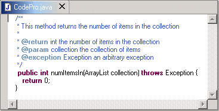
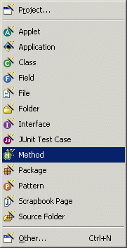
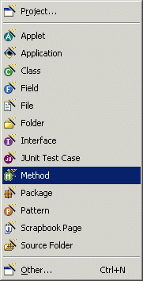
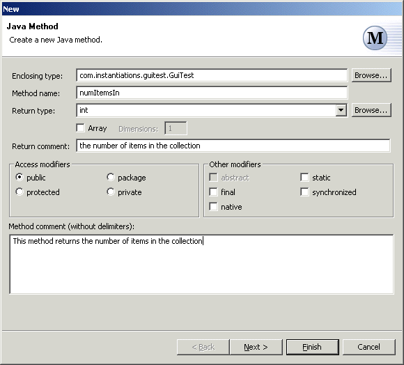
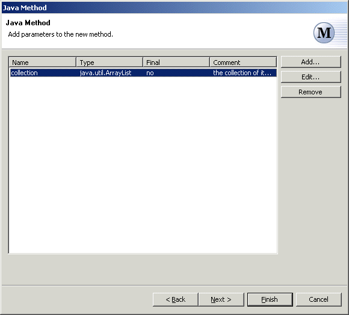
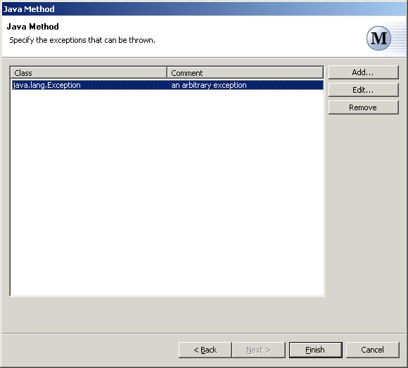

Java Method Wizard
The Java Method Wizard allows you to add a method to a type. The method will be added to the primary type in the currently active compilation unit.

New methods can be created via the standard New wizard by selecting the "Java" category, or via the popup "New" menu or the icon on the main toolbar.
 

The Java Method Wizard contains the following steps:
- Define Method -- specify the name and return type for the method to be created.
- Add Parameters -- specify the parameters for the method being added.
- Add Exceptions -- specify the exceptions that are declared for the method being added.
Define Method
This page of the Java Method Wizard allows you to specify the name and return type for the method to be created.

Enclosing Type
The enclosing type field allows you to specify the type to be extended. You must supply a fully qualified type name. If a type is currently being edited, this field will be pre-populated with the name of that type. You can also click on the button labeled "Browse..." to open a Select Type Dialog from which you can select any object type.

Method name
The method name field allows you to enter the name of the method to be created. You must supply a name that is a valid Java identifier.
Return type
The return type field allows you to specify the return type of the method. The return type can be any of the primitive types or any object type.
You can enter the name of the return type directly, or you can select the return type. All of the primitive types are available on the drop-down list. You can also click on the button labeled "Browse..." to open a Select Type Dialog from which you can select any object type.
To enter a return type that is an array type, select the check box labeled "Array". This will cause the type entered in the return type field to be the base type for the array type. You can specify the number of dimensions in the array by entering a positive integer into the field labeled "Dimensions".
Access Modifiers
The access modifiers group allows you to specify the visibility of the method. You must choose one of the four possible modifiers.
Other Modifiers
The other modifiers group allows you to specify any additional modifiers for the method.
Comment
The comment field allows you to enter a descriptive comment for the method. This comment will be included as a Javadoc comment when the method is created. It should not include the Javadoc comment delimiters. The comment will automatically be formatted and surrounded by comment delimiters for you.
Add Parameters
This page of the Java Method Wizard allows you to specify the parameters for the method being added.

Parameters list
The parameters list is an ordered list of the parameters defined for the method. The contents of the list can be changed by using the buttons to the right of the list.
Add
Open an Add Parameter Dialog in which you can specify a new method parameter to be added at the end of the list.
Edit
Open an Add Parameter Dialog on the currently selected parameter.
Remove
Remove the currently selected parameter from the list of method parameters.
Top
Move the selected parameter to the top of the list.
Up
Move the selected parameter up one place in the list.
Down
Move the selected parameter down one place in the list.
Bottom
Move the selected parameter to the bottom of the list.
Add Exceptions
This page of the Java Method Wizard allows you to specify the exceptions that are declared for the method being added.

Exceptions list
The exceptions list is a list of the exceptions that are declared for the method. The contents of the list can be changed by using the buttons to the right of the list.
Add
Open an Add Exception Dialog in which you can specify a new exception class to be added at the end of the list.
Edit
Open an Add Exception Dialog on the currently selected exception.
Remove
Remove the currently selected exception from the list of method exceptions.
Top
Move the selected exception to the top of the list.
Up
Move the selected exception up one place in the list.
Down
Move the selected exception down one place in the list.
Bottom
Move the selected exception to the bottom of the list.